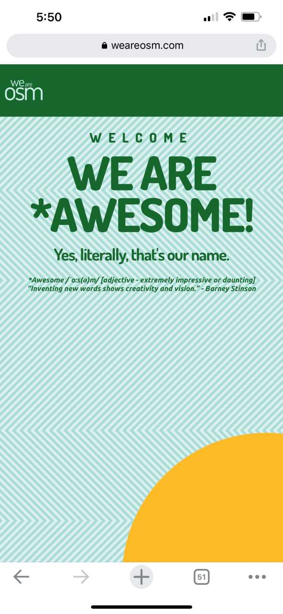

Visual Hierarchy
SquareDot
https://www.squaredot.agency/
SquareDot's design here immediately lets you know what their companies goal is in big bold text. In a short but effective paragraph they explain a little more and then give you a call to action on either side of the page.
Rule of Thirds
Delta
https://www.delta.com/
Delta uses the rule of thirds and visual hierarchy to help the user get where their going faster. The top third of the screen is used to boook flights.
White Space and Clean Design
We are OSM
https://weareosm.com/

This site uses white space to keep their mobile site easy to read and more accessible. I think that white space is more important on mobile than desktop because of the smaller viewport. Having too much on the screen will drive away users and make it harder to stay on your site.